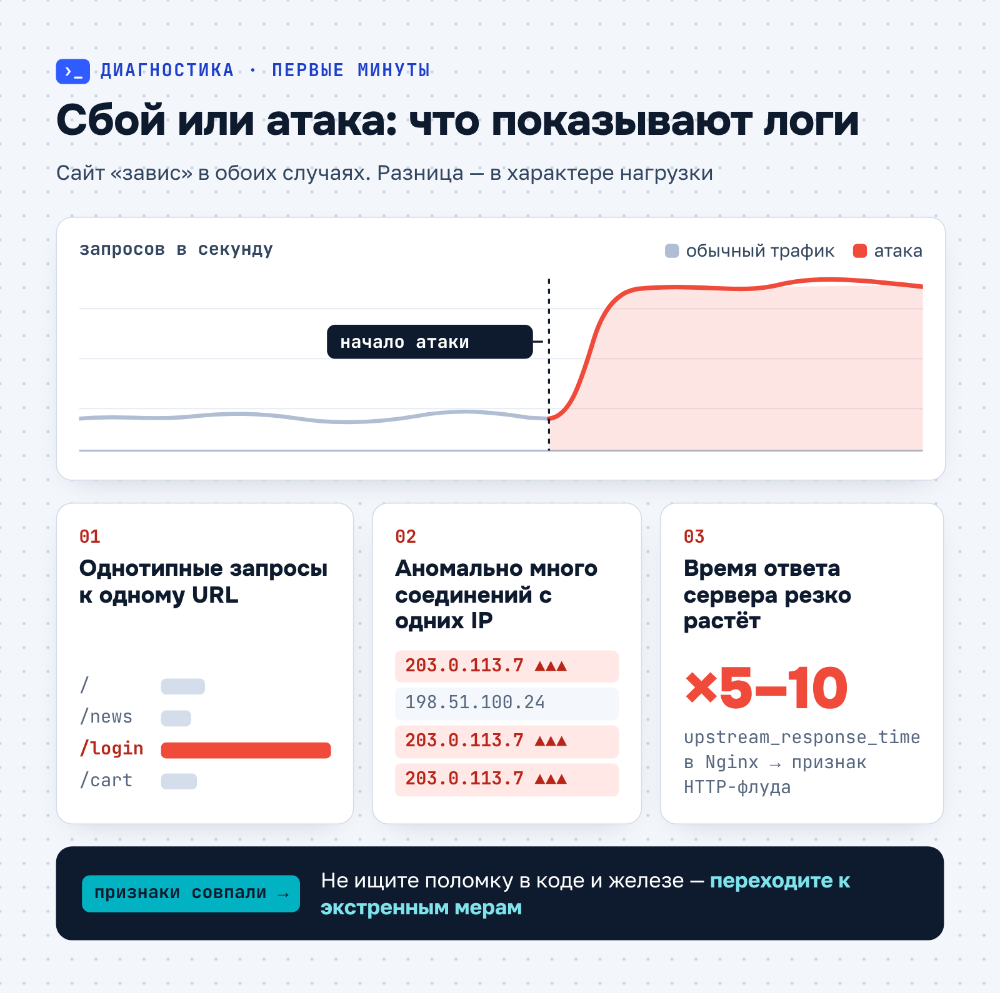
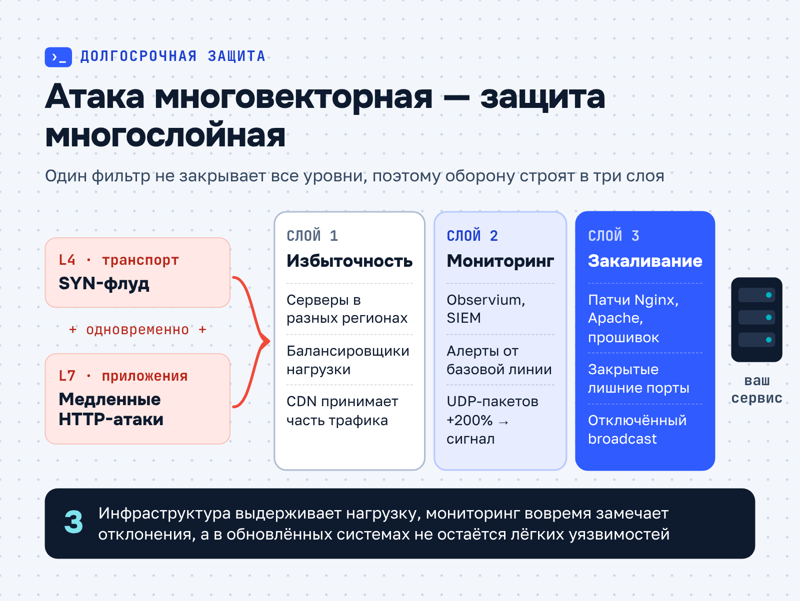
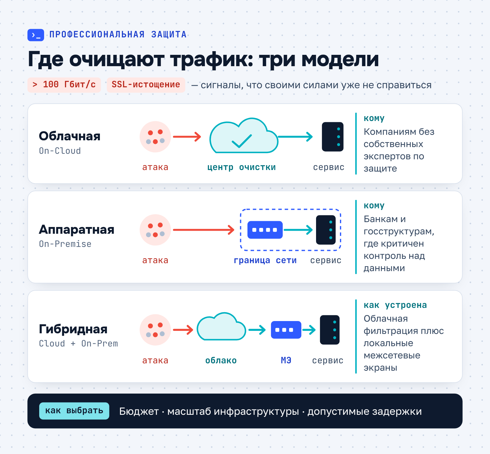

БИТ.CLOUD · Экспертная статья · ИБ
Экспертная статья для ИТ-аутсорсера: что делать при DDoS-атаке на компанию
О заказчикеБИТ.CLOUD (1bitcloud.ru) — облачный сервис компании «Первый Бит»: аренда и хостинг 1С, виртуальные серверы, ИТ-аутсорсинг с поддержкой 24/7, информационная безопасность (аудит, аудит по 152-ФЗ, сканер уязвимостей) и Яндекс 360 для бизнеса. На рынке ИТ-услуг с 2006 года, данные хранит в российских дата-центрах уровня TIER III.
Задача
Подготовить для блога ИТ-аутсорсера статью о том, как компании действовать при DDoS-атаке: как отличить атаку от сбоя, что сделать в первые часы и как выстроить защиту на будущее, — и подвести читателя к услугам мониторинга и защиты БИТ.CLOUD.
Решение
Построила текст как инструкцию по хронологии инцидента: распознавание по логам (однотипные запросы к одному URL, соединения с одних IP, рост upstream_response_time), четыре экстренных шага, три слоя долгосрочной защиты (избыточность, мониторинг, «закаливание» систем), выбор между облачной, аппаратной и гибридной фильтрацией и профилактика с playbook. Технические детали — L4/L7, SYN-флуд, Always-On, WAF, CDN — объяснены на языке руководителя.
Результат
Практическая статья-план для бизнеса с тремя инфографиками: сбой или атака по логам, многослойная защита против многовекторной атаки, три модели очистки трафика. Текст ведёт к заявке на анализ рисков и стратегию защиты.
Что делать при DDoS-атаке на компанию
DDoS-атака бьёт прямо по бизнесу. Пока сайт или сервис недоступен, компания теряет выручку и доверие клиентов. В 2024 году число таких атак в России заметно выросло, а сами они становятся сложнее и продолжительнее.
Ниже — план действий на первые часы атаки и меры, которые снижают риск в будущем.
Как распознать атаку
Первые признаки DDoS легко принять за обычный сбой: сайт «зависает», пользователи жалуются на недоступность сервисов, растёт нагрузка на серверы. Поэтому первая задача — быстро подтвердить, что это именно атака, а не поломка.
Ответ дают логи сервера. Тревожные сигналы — резкий всплеск однотипных запросов, особенно к одному URL, и аномальное число соединений с одних и тех же IP-адресов. Если время обработки запросов в Nginx (параметр upstream_response_time) выросло в 5–10 раз, это может указывать на HTTP-флуд.

Если признаки совпадают, не тратьте время на поиск ошибки в коде или оборудовании. Переходите к экстренным мерам: в первые часы важнее удержать сервис доступным, чем сразу найти источник атаки.
План экстренных мер
Четыре шага, которые стоит сделать в первую очередь:
- Переключите трафик на резервные каналы — запасные IP-адреса или CDN.
- Подключите провайдера защиты. Если у вас сервис в режиме Always-On, центр очистки трафика автоматически отсекает вредоносные пакеты.
- Временно ограничьте доступ. Настройте межсетевой экран так, чтобы он отклонял трафик из регионов, где нет вашей аудитории, или задайте лимит запросов с одного IP.
- Предупредите клиентов. Разместите статус-страницу с информацией о работах.
Эти шаги не останавливают атаку окончательно, но дают команде время разобраться, по какому вектору она идёт.
Стратегия долгосрочной защиты
Разовые меры не спасут от следующей атаки. Современные DDoS-атаки многовекторны: например, SYN-флуд на транспортном уровне (L4) может сочетаться с медленными HTTP-атаками на уровне приложений (L7).

Поэтому защита строится в несколько уровней: инфраструктура, которая выдерживает нагрузку, мониторинг, который вовремя замечает отклонения, и системы, в которых не осталось лёгких уязвимостей.
Инфраструктурная избыточность
Распределите серверы географически и используйте балансировщики нагрузки — тогда при атаке на один узел трафик можно перенаправить на другие. Для веб-ресурсов подключите CDN: сеть кэширует контент и забирает часть трафика.
Проактивный мониторинг
Инструменты вроде Observium или SIEM-системы анализируют трафик в реальном времени. Настройте оповещения об отклонениях от базовых показателей — например, если число UDP-пакетов выросло на 200%.
Обновление и «закаливание» систем
Регулярно обновляйте операционные системы, программы и прошивки сетевых устройств: уязвимости в устаревших версиях Nginx или Apache — частая мишень L7-атак. Закройте неиспользуемые порты и отключите широковещательные рассылки (broadcast) там, где они не нужны.
Когда без профессионалов не обойтись
Самостоятельной защиты хватает лишь небольшим проектам. При атаках мощностью свыше 100 Гбит/с или сложных сценариях вроде SSL-истощения нужны специализированные решения:
- облачные (On-Cloud) — трафик очищают в центрах фильтрации, например DDoS-Guard; подходят компаниям без собственных экспертов;
- аппаратные (On-Premise) — фильтрующие устройства на границе сети; оптимальны для банков и госструктур, где критичен контроль над данными;
- гибридные — сочетание облачной фильтрации и локальных межсетевых экранов.
Выбор зависит от бюджета, масштаба инфраструктуры и допустимых задержек.

Например, интернет-магазину на время распродажи нужна защита в режиме Always-On с гарантиями в SLA: фильтрация работает постоянно, а не включается уже после начала атаки.
Профилактика как основа безопасности
Проводите аудит безопасности раз в квартал. Тестируйте устойчивость к нагрузкам и ищите уязвимости в веб-приложениях.
Обучайте сотрудников. Отличать признаки атаки — например, лавину запросов к API — от легитимного трафика должен уметь не только системный администратор.
Разработайте playbook — документ с ролями, действиями и контактами на случай инцидента. В нём заранее определяют, кто блокирует IP-адреса, кто общается с клиентами и как собирать цифровые улики.
Когда роли распределены заранее, команда не тратит первые минуты атаки на выяснение, кто за что отвечает.
Как БИТ.CLOUD помогает сохранить бизнес онлайн
DDoS-атаку нельзя предотвратить на 100%, но её последствия можно сделать управляемыми. БИТ.CLOUD помогает на каждом этапе — от экстренного реагирования до построения защищённой инфраструктуры. Мы предлагаем:
- круглосуточный мониторинг сетевой активности: аномалии помогает выявлять ИИ;
- настройку и администрирование WAF, CDN и систем балансировки;
- экстренную помощь при атаке — удалённое подключение или выезд специалистов в течение часа, чтобы локализовать угрозу.
Свяжитесь с нами — проанализируем текущие риски и подготовим стратегию защиты.